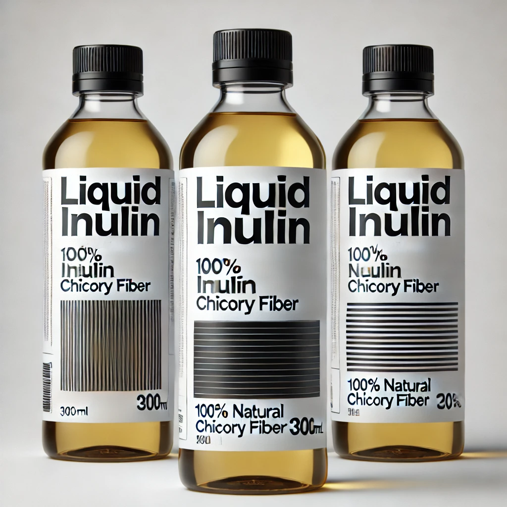

Hibiscus Inulin Sweetener
Our Hibiscus Inulin Sweetener is a natural, low-glycemic sweetener that offers a healthy alternative to traditional sugar. Made from the roots of the chicory plant, it helps regulate blood sugar levels and supports digestive health. With a subtle floral flavor and rich in prebiotic fiber, it's perfect for those looking to cut down on sugar without compromising on taste.
Inulin is a naturally occurring fiber that helps to support gut health by acting as a prebiotic, feeding the beneficial bacteria in the digestive system. Our Hibiscus Inulin Sweetener can be used in beverages, baking, or as a sugar substitute in recipes. It has no added sugars or artificial sweeteners, making it a great choice for those on a low-carb or ketogenic diet.

Liquid Inulin
Liquid Inulin is a highly versatile, easy-to-use prebiotic that can be added to your drinks, smoothies, or food to support your digestive health. Rich in fiber, it promotes the growth of beneficial gut bacteria, which can enhance digestion, regulate blood sugar, and support heart health. It also has a mild sweetness, making it a great addition to recipes that require a natural sweetener.
Our Liquid Inulin is carefully crafted to maintain all the beneficial properties of inulin, making it a great choice for anyone seeking a natural and sustainable source of fiber. It's tasteless, making it easy to incorporate into a wide variety of foods and beverages without altering the flavor. Whether you're making smoothies, salad dressings, or desserts, Liquid Inulin is an excellent addition to your healthy lifestyle.